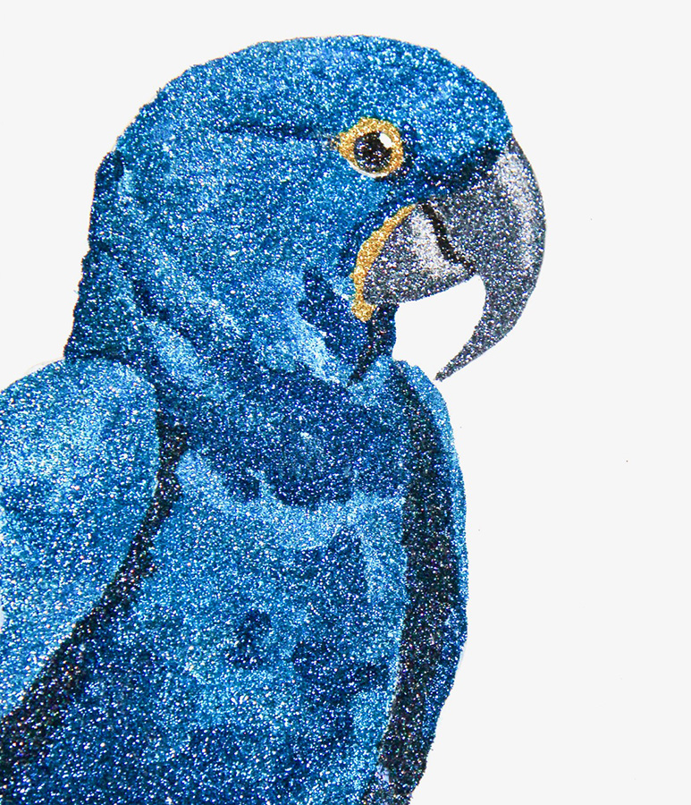
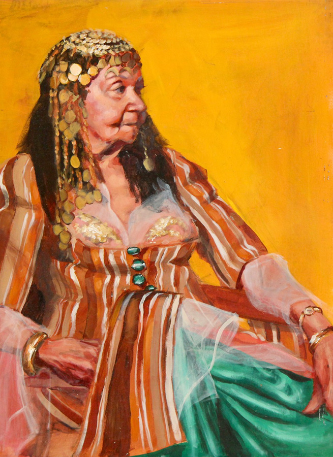
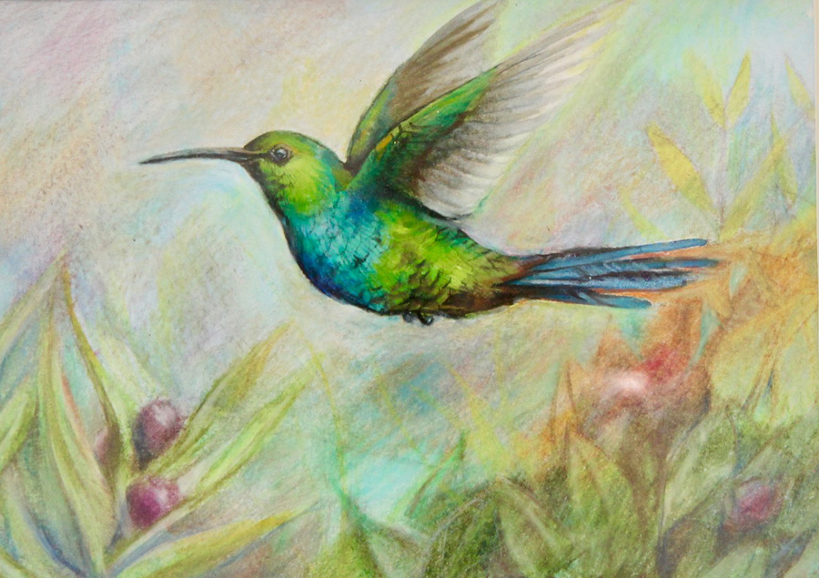
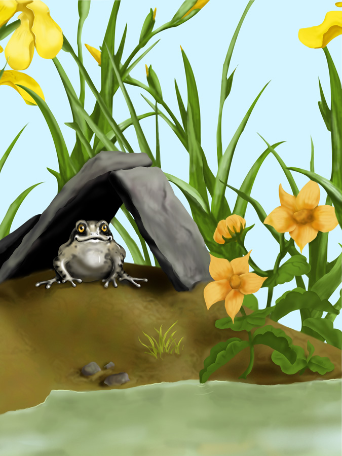
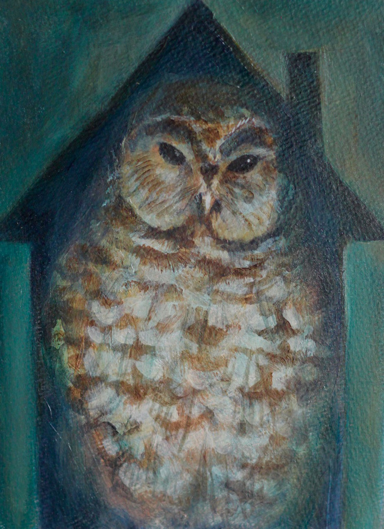

Illustrations and Other Work
Glitter Painting
I started creating glitter paintings in 2010. The initial sketch for each of these paintings is filled in one color at a time; each area is painted with PVA glue and then sprinkled with ultrafine glitter. I custom-mix many of the colors for added depth. You can find some recent works for sale in my Etsy shop.
Portrait of Lala
This is one of a series of acrylic portraits painted at Art Center College of Design, from live models, in four- to six-hour sessions.
Hummingbird
Birds are my favorite subjects — I love their colors and personalities! This drawing was done in Prismacolor pencil over a watercolor underpainting.
Ponds & Streams
In 2005, I used my Wacom tablet and Photoshop to create a series of digital paintings for Spiny Software's Ponds & Streams, a British educational CD-ROM. This was the image used for the cover.
Barred Owl
I painted this spotted owl for an illustration class at Art Center College of Design.